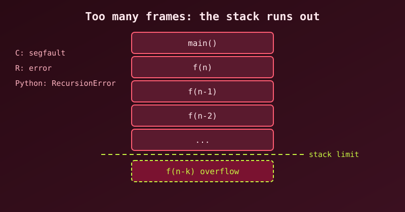

This post follows Recursion in C and Recursion in R: what happens when recursion goes too deep, and what to do about it.
What a stack overflow actually is
Every function call pushes a stack frame onto the call stack, a block of memory holding that call’s parameters, local variables, and return address. The stack is a fixed-size region decided when the program starts (typically 8 MB for the main thread on Linux and 1 MB on Windows).
high address
┌──────────────┐
│ frame main │
├──────────────┤
│ frame f(3) │ ← each recursive call pushes another frame
├──────────────┤
│ frame f(2) │
├──────────────┤
│ frame f(1) │
├──────────────┤
│ ... │ ← keep pushing → grow downward
└──────────────┘
low address ← the stack limit is hereWhen frames keep piling up past that limit, the program writes off the end of the stack: a stack overflow. What happens next depends on the language’s runtime:
| Language | On overflow | Catchable? |
|---|---|---|
| C | Segfault (SIGSEGV) — process dies | ❌ No |
| R | Error: evaluation nested too deeply (or node stack overflow when expressions is raised) |
✅ Yes (an R error) |
| R (C stack exhausted) | Error: C stack usage … is too close to the limit, can crash |
⚠️ Sometimes |
| Python | RecursionError |
✅ Yes (a Python exception) |
The cause is always one of two things: 1. No base case, or a base case never reached → infinite recursion. 2. A correct but very deep recursion (depth ~10⁵–10⁶) → legitimate algorithm, too many frames.
C: dies with a segfault
Infinite recursion (no base case)
#include <stdio.h>
int sum(int n) {
return n + sum(n - 1); // ❌ never stops
}
int main(void) {
printf("%d\n", sum(3));
return 0;
}$ gcc so1.c -o so1 && ./so1
Segmentation fault (core dumped)Each call pushes a frame; after a few hundred thousand frames (depending on frame size and stack limit), the stack runs out and the CPU faults on the write. There is no error message and no recovery; the process is just gone.
With optimisation the result can differ. Compiled with gcc -O2, this same program did not crash on our machine: it ran forever, because the compiler turned the tail call into a loop. A runaway recursion is a bug either way, but do not count on a segfault to reveal it.
A “correct” recursion that’s still too deep
int sum_to(int n) {
if (n == 0) return 0; // ✅ proper base case
return n + sum_to(n - 1);
}
// sum_to(10000000); → segfault at -O0The base case is fine, but depth = n frames. At 10⁷ calls × a few dozen bytes per frame, that is hundreds of MB of stack, far past the 8 MB limit. We compiled it with plain gcc and it segfaulted.
With gcc -O2 the same program ran without crashing, because GCC rewrote the recursion as a loop. (It printed -2004260032, since the true sum overflows int; use long for real work.) The C standard does not promise this optimisation, so the code is still unsafe.
The sneakier version: huge local arrays
void recurse(int n) {
int buffer[100000]; // ~400 KB per frame!
recurse(n + 1);
}About 20 calls are enough to fill an 8 MB stack, because each frame carries a 400 KB local array. This is why frame size matters as much as depth. (We ran a version that recurses 1000 levels; it segfaulted.)
Inspect your limits:
ulimit -s # stack size in KB (e.g. 8192 = 8 MB)
gcc -fstack-usage ... # per-function frame sizes in a .su fileR: usually an R error, sometimes a C-stack crash
Infinite recursion → R’s expressions limit
f <- function(n) n + f(n - 1)
f(1)Error: evaluation nested too deeply: infinite recursion / options(expressions=)?R doesn’t let nesting run away silently: it counts nested expressions and stops at options(expressions), which defaults to 5000. This is a catchable R error (you can wrap it in tryCatch), not a process crash.
A legitimate deep recursion that still fails
sum_to <- function(n) if (n == 0) 0 else n + sum_to(n - 1)
sum_to(100) # fine
sum_to(10000) # Error: evaluation nested too deeplyYou can raise the limit:
options(expressions = 100000)
sum_to(10000) # works
sum_to(100000) # Error: node stack overflowR 4.6 stopped the second call with node stack overflow, R’s own evaluation stack. Other builds, or functions with larger frames, can instead hit the C stack and report:
Error: C stack usage 7970000 is too close to the limitThat is the actual OS stack filling, closer to C’s situation. Raising expressions does not grow the stack; it only moves the point where R complains.
Inspect it:
getOption("expressions") # 5000 by default
options(expressions = 20000)Python: a clean, catchable RecursionError
Infinite recursion
def sum_to(n):
return n + sum_to(n - 1) # no base case
sum_to(3)RecursionError: maximum recursion depth exceededPython counts Python frames and stops at sys.getrecursionlimit() — default 1000. Unlike C, this is a normal exception you can catch:
try:
sum_to(3)
except RecursionError:
print("too deep!")The trap: raising the limit can segfault
import sys
sys.setrecursionlimit(1000000) # ⚠️ dangerous
sum_to(1000000) # segfault, not RecursionErrorsetrecursionlimit only raises Python’s counter. The C stack behind it is still ~8 MB. If CPython’s own C-level recursion runs out before the Python counter trips, you get a hard segfault, with no exception and no message. On Python 3.10 this exact example dumped core on our machine. (Recent CPython versions add C-stack guards that convert some of these to RecursionError, but it is not safe to rely on.)
A correct deep recursion that still fails
def sum_to(n):
if n == 0:
return 0
return n + sum_to(n - 1)
sum_to(100) # ✅ 5050
sum_to(10000) # ❌ RecursionError: maximum recursion depth exceeded in comparisonHow to avoid it, in any language
1. Always have a reachable base case that shrinks the problem
int sum(int n) {
if (n == 0) return 0; // base case
return n + sum(n - 1); // shrinks toward base
}If the argument doesn’t move toward the base on every call, it’s infinite.
2. Convert linear recursion to a loop (the best fix when you can)
This is the real solution for sum, factorial, and any “n → n−1” chain. Depth O(n) becomes depth O(1):
// C
long sum_to(int n) {
long s = 0;
for (int i = 1; i <= n; i++) s += i;
return s;
}# Python
def sum_to(n):
return sum(range(n + 1)) # or a loop# R
sum_to <- function(n) sum(seq_len(n))No stack growth at all — the loop lives in one frame.
3. Use an explicit stack (manual recursion)
For trees/graphs where recursion is natural, keep your own stack on the heap, which is much larger than the call stack:
def dfs(root):
stack = [root]
while stack:
node = stack.pop()
visit(node)
stack.extend(node.children) # no call frames, no depth limit// C — same idea
void dfs(Node *root) {
Node *stack[1000];
int top = 0;
stack[top++] = root;
while (top > 0) {
Node *n = stack[--top];
visit(n);
for (int i = 0; i < n->nchild; i++)
stack[top++] = n->child[i];
}
}4. Halve the problem instead of decrementing it
The power example from the C recursion post is the template. n → n−1 gives depth n; n → n/2 gives depth log₂ n — a million-step problem becomes ~20 frames:
def power(x, n):
if n == 0:
return 1
half = power(x, n // 2) # depth = log2(n), not n
return half * half if n % 2 == 0 else x * half * halfpower(2, 1000000) recurses about 20 levels (we ran it in Python without trouble). sum_to(1000000) with n-1 would need a million.
5. Memoisation: fixes redundant recursion, not deep recursion
Naive Fibonacci is O(2ⁿ) calls but only depth n. Memoizing cuts the number of calls dramatically, but does not reduce depth — fib(10000) still recurses 10,000 levels. Use it for speed, not for stack safety.
6. Trampoline: portable “fake tail recursion”
C, R, and Python do not guarantee tail-call optimization (TCO). So return f(x) still pushes a frame. A trampoline turns recursion into a loop:
def trampoline(f, *args):
result = f(*args)
while callable(result):
result = result()
return result
def sum_to(n, acc=0):
if n == 0:
return acc
return lambda: sum_to(n - 1, acc + n) # return a thunk, don't call
print(trampoline(sum_to, 1000000)) # 500000500000, no RecursionErrorEach “recursive” step returns a thunk and the loop calls it, so only one frame is ever live. This is how you do deep recursion in Python without touching the limit.
7. Last resort: increase the stack (a band-aid, not a fix)
ulimit -s 65536 # Linux: 64 MB stack for this shell/processimport threading
threading.stack_size(64 * 1024 * 1024) # Python: run in a big-stack thread# no clean per-script control of the C stack: rewrite the function insteadThis buys headroom but doesn’t remove the bug — a truly infinite recursion still overflows, just later. Treat it as a stopgap while you rewrite.
Summary: what to do
| Situation | Fix |
|---|---|
| No base case / never reached | Add one; ensure the argument moves toward it |
Simple linear recursion (n-1 chain) |
Rewrite as a loop — depth O(1) |
| Tree/graph traversal | Explicit stack on the heap |
| Divide-and-conquer | Ensure it halves (depth log n) |
| Deep recursion, can’t rewrite easily | Trampoline (portable; no TCO in C/R/Python) |
| Need more headroom temporarily | Raise stack (ulimit -s, thread stack size) — stopgap |
| Just need speed | Memoise, but it will not fix depth |
The one-line rule: recursion depth is a resource like memory, and O(n) depth is a bomb for large
n. Prefer iteration (O(1) depth), halving (O(log n) depth), or an explicit heap stack whenever the input can be large. Languages differ in how loudly they fail (C segfaults, Python and R raise catchable errors), but none of them will save us from a bad recursion design.